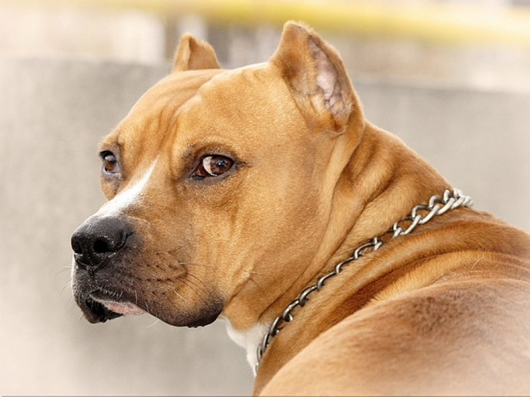

Američki Pit Bul Terijer
Pit bul terijer je postao ukrštanjem buldoga i starog engleskog belog terijera. Priča se i da je korišćena ukrštena pasmina španskog poentera ali to nikada nije potvrdeno. Tačan odnos svih rasa korišćenih za dobijanje pit bul terijera se ne zna.
Tokom devetnaestog veka, kada su hajke na bikove i borbe pasa bili živi sportovi, buldog se pokazao kao prespor za borbe i odatle potreba za bržim psom sa dobrim i jakim čeljustima koje sakate žrtvu. Nova pasmina je uspešno odgovorila zahtevima i bila je superiornija od buldoga za borbu. Jedna od prvih osobina koja je dobijena bila je borbenost i sposobnost za borbu. Vremenom je došlo do malih izmena u izgledu pit bul terijera. Najuočljivija promena je na glavi. Današnji psi naginju više tipu terijera nego tipu buldoga što je bilo zajedničko obeležje prvih pasa u devetnaestom veku. Primećene su izrazite karakteristike koje su sa vremena na vreme izbijale otkrivajući pretke. Opšte karakteristike su rastavljene noge, zašiljen rep, istaknuta donja vilica i niska gradja. Ipak, dobijen je potpuno ponovljen primerak engleskog belog terijera u koži pit bul terijera. Mada se ove karakteristike retko javljaju, one se mnogo češće nalaze kod pasa kod kojih su postale nasledne. U osamnaestom i devetnaestom veku borba pasa i hajka na bizone su bili u Engleskoj veoma živi sportovi. U devetnaestom veku Engleska je donela zakon kojim se ovi sportovi stavljaju van zakona. Ubrzo posle donošenja ovog zakona pit bul terijer je počeo da iščezava iz očiju javnosti jer niko nije želeo da se za njega kaže da je vlasnik psa borca zbog kazne koju je zakon propisao za svakog za koga se utvrdi da je izveo psa u borbu. Nekoliko godina kasnije izgledalo je da je pasmina ponovo vraćena i nazvana je stafordski terijer. Pod tim nazivom je i danas poznat u Engleskoj. Medjutim kada je borba pasa preneta u Sjedinjene Države stari naziv pit bul terijer vraćen je ovoj pasmini. Veruje se da ona nikada više neće biti nazivana ni jednim drugim imenom osim američki pit bul terijer.
Standardi za Američkog Pit Bul Terijera:
Odobreni od strane Kluba ujedinjenih kinologa 1938.
- GLAVA: srednje dužine, četvrtasta (oblik cigle), lobanja ravna i najšira kod ušiju, istaknuti obrazi, bez bora.
- NJUŠKA: četvrtasta, široka i snažna, dobro izraženih čeljusti koje odražavaju snagu. Gornji zubi čvrsto naležu na donje, osim spreda.
- UŠI: sečene ili ne (nije važno) treba da budu postavljene visoko na glavi i da nemaju bore.
- OČI: tamne i okrugle, treba da budu rastavljene nisko dole na lobanji.
- NOS: crn, poželjno širom otvorenih nozdrva.
- VRAT: mišićav, blago lučno izvijen. Sužava se se od ramena prema glavi bez delova sa opuštenom kožom.
- RAMENI POJAS: snažan i mišićav širokih kosih lopatica.
- LEDJA: kratka snažna sa blagom kosinom od grebena prema trtičnoj kosti, blago lučno izvijena kod slabina i blago zategnuta.
- GRUDI: jake ali ne preširoke sa široko izbočenim rebrima.
- REBRA: blizu postavljena, dobro isturena sa jakim ledjnim rebrima.
- REP: kratak u poredjenju sa veličinom, nisko postavljen i prelazi u fini šiljati oblik. Nije postavljen iznad ledja.
- NOGE: velike okrugle kosti sa ravnim uspravnim skočnim zglobom umereno jakim. Stopala srednje veličine.
Hod treba da bude lak i gibak, bez krivudanja ili sporog koračanja, nizak, ravan. - BEDRA: duga sa razvijenim mišićima, gležanj nizak, ravan.
- DLAKA: sjajna, kratka, kruta na dodir.
- BOJA: sve boje i šare su dozvoljene.
- TEŽINA: nije važna. Za ženke poželjno od 14 kg do 23 kg a za mužjake 27 kg.
Prosečna javnost misli da ovu pasminu čine opaki psi mesožderi koji bi, hranjeni sirovim mesom, proždrli čoveka. Kako je lako zavesti nekoga da je to istina. Vlasnici veruju da nijedna druga pasmina nije toliko pouzdana, odana, dobre naravi i nežna kao što je američki pit bul terijer, naravno sve to zavisi od samog vlasnika. Iako se ove karakterne osobine jasno uočavaju kod psa nakon nekoliko minuta vidite ga kako je naspram drugog psa boreći se lukavim instinktom divlje životinje sa namerom da ubije. Kao pratilac, pas čuvar i prijatelj, on je neprevazidjen. Pas pravilno izdresiran i odgojen izvršavaće više zadataka od bilo koje druge pasmine koju znam. Kao pratilac uvek ie zainieresovan za ono što njegov gazda radi i spreman je da ga služi svakog trenutka. Kao čuvar je nenadmašan. Ovaj pas je dobar i umiljat. Ne kreće da ujeda svakoga ko naidje ali ima takav instinkt da razlikuje dobro od lošeg kada čuva imovinu svog gazde. Za ovu pasminu je poznato da daje odlične lovačke pse ukoliko se pravilno obuči u pravom uzrastu. Ne može se medjutim od svakog američkog pit bul terijera napraviti lovački pas. Kao kućni ljubimac dobar je prema deci i prima gomilu grdnji sa jedinim odgovorom – cvilenjem. Kada se ova pasmina naziva opštenamenskom to je na osnovu toga što ona poseduje snagu, proporcionalno je gradena a ima karakter, sklonost i hrabrost da bude pas te vrste. Ako ga držite vezanog i hranite sirovim mesom on neće postati opaki pas. Biće dobronameran i spreman za igru kao bilo koji drugi natovljeni kućni ljubimac pseće rase. Svako ko želi da poseduje opštenamenskog psa treba da odabere štene američkog pit bul terijera.
Američki Pit Bul Terijer i Američki Staford Terijer skoro da su ista rasa pasa po onome što istorija te pasmine kaže!
Više o tome u opisu Američkog Staford Terijera.